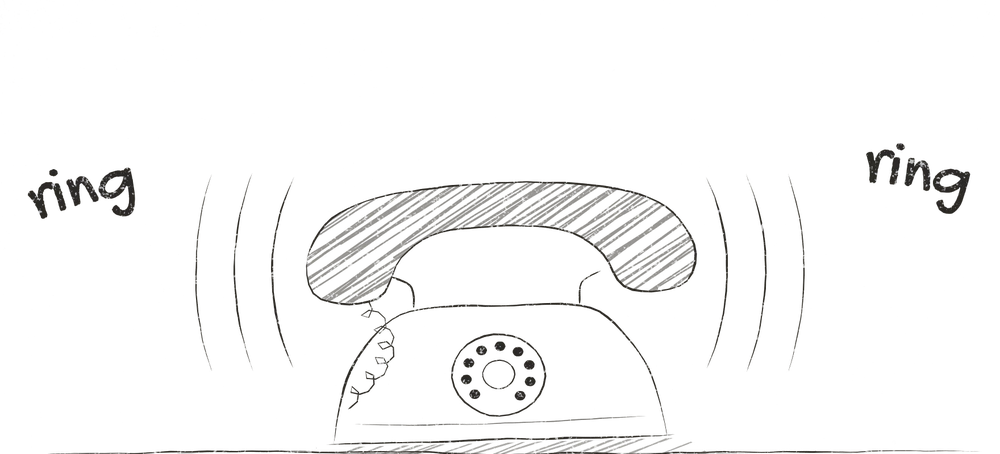
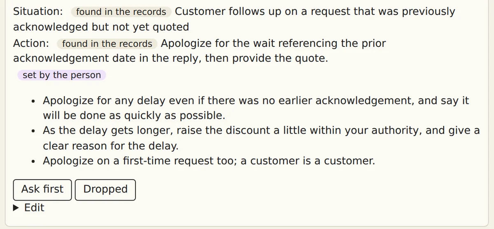
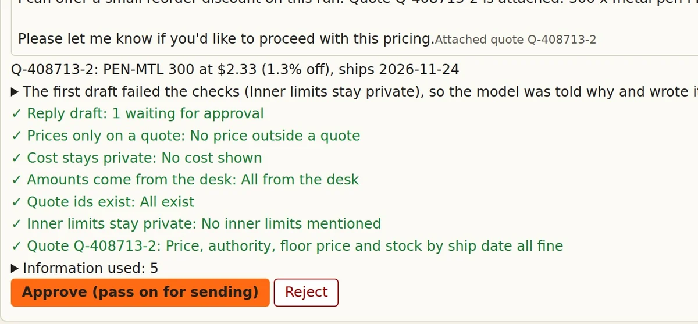
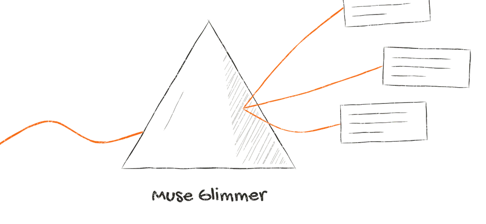
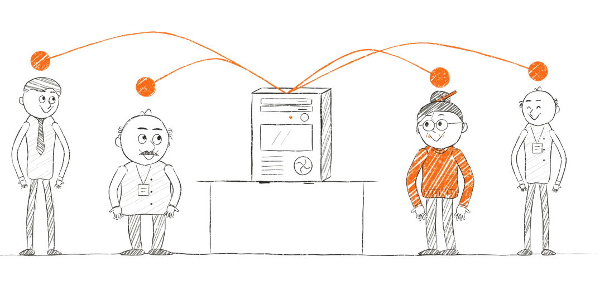

<title>workalike</title>
<meta name="description" content="The agent that learns the rules nobody wrote down. Watch one request handled three ways on the same Muse Glimmer model and GPU, or download the LoRA.">
<meta property="og:title" content="workalike: the agent that learns the rules nobody wrote down">
<meta property="og:description" content="Watch one request handled three ways on the same Muse Glimmer model and GPU, or download the LoRA. Built on Meta's open models.">
<meta property="og:image" content="https://flyingrang2.github.io/workalike/og.jpg">
<meta property="og:url" content="https://flyingrang2.github.io/workalike/">
<meta property="og:type" content="website">
<meta name="twitter:card" content="summary_large_image">
<link rel="icon" href="favicon.svg" type="image/svg+xml">
<link rel="preconnect" href="https://fonts.googleapis.com">
<link rel="stylesheet" href="https://fonts.googleapis.com/css2?family=Bricolage+Grotesque:opsz,wght@12..96,600&family=Gochi+Hand&family=Instrument+Sans:wght@400;600&display=swap">
<link rel="stylesheet" href="style.css">
<svg width="0" height="0" style="position:absolute" aria-hidden="true"><defs><filter id="wobble" x="-2%" y="-2%" width="104%" height="104%"><feTurbulence type="fractalNoise" baseFrequency=".012" numOctaves="2" seed="7"/><feDisplacementMap in="SourceGraphic" scale="5"/></filter></defs></svg>
<main>
  <header class="hero">
    <div class="lead">
      <h1>The agent that learns the rules nobody wrote down.</h1>
      <p class="second">workalike finds them in how you work, asks you only what it can't tell, and trains them into an open Muse Glimmer model that stays on your own GPU.</p>
      <p class="links"><a class="button first" href="#race-title">See the race</a> <a class="button" href="evidence.html">Check the numbers</a></p>
    </div>
    
  </header>

  <figure class="film" id="film">
    <div class="drawn"><!--FILM--></div>
    <figcaption>Three minutes. The numbers in it come from the tests further down this page.</figcaption>
  </figure>

  <section class="race-section" aria-labelledby="race-title">
    <div class="try-head">
      <h2 id="race-title">Same request. Three ways to handle it.</h2>
      <p>Same model, Muse Glimmer. Same GPU, one NVIDIA L40S. Same customer pushing back. The real recorded runs from our test, played together and sped up.</p>
    </div>
    <div id="race"><p>Loading the race.</p></div>
    <div class="trade">
      <h3 class="how">The same three across the whole test</h3>
      <div class="table-wrap">
        <table>
          <caption>24 new tickets, each run twice. Averages, not the race above.</caption>
          <thead><tr><th scope="col"></th><th scope="col">Muse Glimmer out of the box</th><th scope="col">Reading the written rules</th><th scope="col" class="ours">LoRA, no rules in its prompt</th></tr></thead>
          <tbody>
            <tr><th scope="row">Seconds per ticket</th><td>167</td><td>181</td><td class="ours">29</td></tr>
            <tr><th scope="row">Tokens written per ticket</th><td>3,232</td><td>3,497</td><td class="ours">534</td></tr>
            <tr><th scope="row">Right, of 48</th><td>37</td><td>45</td><td class="ours">41</td></tr>
            <tr><th scope="row">Dangerous drafts</th><td>7</td><td>0</td><td class="ours">1</td></tr>
          </tbody>
        </table>
      </div>
      <p class="trade-line">About six times faster than reading the rules, at 41 of 48 right against 45. Every draft waits for a person's approval.</p>
      <p class="why-recorded">Why recordings? The LoRA needs a 48GB GPU, and we don't keep one running for a web page. These are the real runs: <a href="evidence.html#runs?key=discount-authority-yes">read all six runs of this ticket</a>, or <a href="#download">download the LoRA</a> and run it yourself.</p>
    </div>
  </section>

  <section class="section" id="what" aria-labelledby="what-title">
    <h2 id="what-title">What it does</h2>
    <div class="prose">
      <p>When the person who knows a job is away, the colleague covering gets drafts done that person's way, and approves them. Nobody has to write a manual first. The person who knows the job works as usual with recording on, and answers only what the records could not settle: in our test, 29 short answers in about 10 to 15 minutes, by their own estimate.</p>
    </div>
    <h3 class="how">How that ticket got to 0.91%</h3>
    <div class="prose"><p>In the records the worker took about 5% off. The person said "the smallest discount". With no rules in its prompt, the LoRA took 0.91%.</p></div>
    <div class="trip">
      <div class="leg drawn">
        <h4>Found in the records</h4>
        <p>A scripted worker handled 60 tickets. On one, a customer pushed back, the worker asked the owner, and took about 5% off. Muse Glimmer read all 60 and wrote a rule, citing 12 of them. It begins:</p>
        <blockquote>"If the discount is within the worker's stated discount authority and at or above the floor price, apply it directly and note the discount % as within authority."</blockquote>
      </div>
      <div class="leg drawn">
        <h4>Settled by a person</h4>
        <p>Muse Glimmer also listed what the records left open. Asked "Whether a discount is offered proactively without an explicit price request", one person answered (translated from Korean, hedges dropped):</p>
        <blockquote>"Do not discount without an explicit request. On a re-quote, when the customer explicitly asks for a lower price, give the smallest discount; a regular customer may get a little more. …"</blockquote>
      </div>
      <div class="leg ours drawn">
        <h4>LoRA, no rules in its prompt</h4>
        <p>A new ticket: "Hmm, that's quite a bit more than last time (Q-6676). Is there anything you can do on the price?"</p>
        <p class="big">0.91% off, 32 seconds</p>
        <p>That is the race at the top of this page. In the same run, the model out of the box took 4.94% off in 329 seconds, and reading the written rules took 1.04% off in 425.</p>
        <p><a href="evidence.html#runs?key=discount-authority-yes">Read all six runs of this ticket</a></p>
      </div>
    </div>
    <div class="shots">
      <figure>
        <a href="shot-desk.webp"></a>
        <figcaption>The running desk, on our GPU. Every rule says whether it was found in the records or set by the person. Click for the whole screen.</figcaption>
      </figure>
      <figure>
        <a href="shot-draft.webp"></a>
        <figcaption>A draft from the LoRA on another pushback ticket, 1.3% off. Its first draft failed a check, so the model was told why and wrote it once more. Nothing is sent until someone presses Approve.</figcaption>
      </figure>
    </div>
    <details class="rules">
      <summary>All 10 rules Muse Glimmer found, and the 29 answers</summary>
      <!--RULES-->
    </details>
  </section>

  <section class="section" id="meta" aria-labelledby="meta-title">
    <h2 id="meta-title">What Muse Glimmer does here</h2>
    <p class="teacher">The same open model is both teacher and student.</p>
    <div class="meta-grid">
      <ol class="jobs">
        <li><b>It reads the records.</b> It writes the rules it finds, each one tied to the records behind it.</li>
        <li><b>It practises.</b> It works new tickets from those rules through the desk's own tools: 173 in our test.</li>
        <li><b>It is trained.</b> Its clean, correct work, with the rules taken out, becomes a QLoRA adapter: 155 tickets, 40 minutes on one 48GB GPU.</li>
        <li><b>It works.</b> With that adapter it handles new tickets with none of the rules in its prompt and far less deliberation: on the same short prompt, 534 generated tokens a ticket against 3,232 out of the box.</li>
      </ol>
      
    </div>
    <div class="prose">
      <p><b>The rule book stays the source of truth, and the adapter is a replaceable, learned version of it.</b> Change a rule and the adapter turns off until it has learned the change. On the running desk, two requests went from 59 seconds to 535 and from 13 to 70 after a rule changed, because the model was reading the written rules again.</p>
      <p>A model behind an API can follow a written manual. Open weights are what let us train the rules in ourselves, serve an adapter for each person on one GPU, and keep the records there.</p>
      <p>We also built a hosted version on Muse Spark Open through Baseten, where a written manual is the whole method. It followed the manual in 59 of 60 runs. The race above shows what training adds.</p>
    </div>
  </section>

  <section class="status" aria-label="What works today and what does not yet">
    <div>
      <h3 class="how">Works today, on the sample desk</h3>
      <ul>
        <li>It reads 60 records, writes 10 rules tied to them, and lists what they leave open.</li>
        <li>A LoRA, trained by a script on the model's own practice tickets, works new tickets with none of the rules in its prompt.</li>
        <li>Every draft goes through the desk's checks and waits for a person. Change a rule and the adapter turns off.</li>
      </ul>
    </div>
    <div>
      <h3 class="how">Not yet</h3>
      <ul>
        <li>No real shop has used it. The records came from a scripted worker.</li>
        <li>To choose which practice tickets to train on, we used answers our ticket generator already knew. A real shop has no such answers; a person's approvals would have to do that job, which isn't built.</li>
        <li>The automatic training built into the product has run once, and its safety check refused the adapter it made. Every LoRA number here comes from the script above.</li>
        <li>We have only run it on a 48GB GPU.</li>
      </ul>
    </div>
  </section>

  <section class="section" id="numbers" aria-labelledby="tested-title">
    <h2 id="tested-title">What we tested</h2>
    <ul class="wins">
      <li><b>It holds the person's line.</b> A customer pushed back: Muse Glimmer out of the box took 4.94% off, and with the LoRA it took 0.91% and 0.65%, near the person's answer of about 1%. Asked outright for 3%, it took 2.29%. When nobody asked for a discount, 17 of 36 runs quoted at all, and none added one: 15 at list, 2 at a still-valid approved price.</li>
      <li><b>It asks instead of guessing.</b> On tickets with no ship date, Muse Glimmer out of the box quoted a date nobody gave in 6 of 6 runs. With the LoRA it asked in 5 of 6.</li>
      <li><b>The desk's checks read every draft.</b> They held back 7 of the LoRA's 48 first drafts. Three told a customer the shop's lowest price, such as "Floor unit price is $5.70", and the rewrites left the amount out. They don't catch everything: the one dangerous draft came out of a rewrite.</li>
      <li><b>About five times the tickets on the same GPU.</b> 485 an hour against 100 when it reads the rules on every ticket, or 425 against 96 counting only the right ones. The slowest tickets came down too: 68 seconds at p95 against 456. That is with one adapter; we have not measured many at once.</li>
    </ul>
    <div class="table-wrap">
      <table>
        <caption>24 new tickets with the answers written before any run, each run twice, 48 runs a column.</caption>
        <thead><tr><th scope="col"></th><th scope="col">Muse Glimmer out of the box</th><th scope="col">Reading the written rules</th><th scope="col" class="ours">LoRA, no rules in its prompt</th></tr></thead>
        <tbody>
          <tr><th scope="row">Right, of 48</th><td><a href="evidence.html#runs?arm=none&amp;verdict=right">37</a></td><td><a href="evidence.html#runs?arm=checked&amp;verdict=right">45</a></td><td class="ours"><a href="evidence.html#runs?arm=p-checked&amp;verdict=right">41</a></td></tr>
          <tr><th scope="row">Dangerous drafts</th><td><a href="evidence.html#runs?arm=none&amp;verdict=dangerous">7</a></td><td>0</td><td class="ours"><a href="evidence.html#runs?arm=p-checked&amp;verdict=dangerous">1</a></td></tr>
          <tr><th scope="row">Asked needlessly, or stuck at the checks</th><td><a href="evidence.html#runs?arm=none&amp;verdict=other">4</a></td><td><a href="evidence.html#runs?arm=checked&amp;verdict=other">3</a></td><td class="ours"><a href="evidence.html#runs?arm=p-checked&amp;verdict=other">6</a></td></tr>
          <tr><th scope="row">Seconds per ticket, average</th><td>167</td><td>181</td><td class="ours">29</td></tr>
          <tr><th scope="row">Seconds per ticket, p95</th><td>377</td><td>456</td><td class="ours">68</td></tr>
          <tr><th scope="row">Tickets an hour on one GPU</th><td>not measured</td><td>100</td><td class="ours">485</td></tr>
          <tr><th scope="row">Right tickets an hour, same run</th><td>not measured</td><td>96</td><td class="ours">425</td></tr>
          <tr><th scope="row">Discount on a pushback, 5% allowed, two runs</th><td>4.94%, 4.94%</td><td>1.04%, 1.04%</td><td class="ours">0.91%, 0.65%</td></tr>
        </tbody>
      </table>
    </div>
    <div class="prose">
      <p>The LoRA trades some accuracy for speed: 41 right against 45, and 1 dangerous draft against none. In return, a colleague waits about 29 seconds for a draft instead of about three minutes, and the same GPU works about five times the tickets. And speed is not all it learned: on the same short prompt, out of the box quoted a ship date nobody gave in 6 of 6 runs, and with the LoRA it asked in 5 of 6. Nothing goes out until a person approves, in any column.</p>
      
      <p>We wrote the answers and hashed them before any run. A second reader, a fresh Claude agent that could not see which column wrote a draft, re-read the verdicts that rested on words and agreed on 96 of 98. When a bug in the training rows voided a round of results, we threw them out.</p>
      <p>Click a number to read those runs. <a href="evidence.html">The evidence page</a> has every run, the full table and what changed along the way. Or recompute the tables with no GPU: <code>python3 scripts/check_numbers.py --check</code>.</p>
    </div>
    <details class="rules">
      <summary>How to read this table</summary>
      <div class="prose">
        <p>"Right" means the outcome the answer sheet asks for, such as any discount inside authority, so 4.94% off counts as right. Following the person's answer shows in the discount row. "Dangerous" means a person could approve it, and it is wrong or promises what nothing supports. Before the desk's checks, first drafts were dangerous 10 times out of the box, once reading the rules, and 6 times with the LoRA.</p>
        <p>Each ticket ran through the product's own agent loop at temperature 0, so read this as 24 tickets seen twice. "No rules in its prompt" means none of the rule book; the desk's short job description stays. Tickets an hour were measured separately, one column alone on the server, six at a time.</p>
        <p>These runs use the checks from the day of the test. The desk has gained one since, which would have sent 5, 8 and 6 of the right drafts back for a rewrite.</p>
      </div>
    </details>
  </section>

  <section class="get" id="download" aria-labelledby="get-title">
    <div class="section">
      <h2 id="get-title">Run it on your GPU</h2>
      <p>The adapter is a free 419MB download under Apache-2.0. It learned one person's way on the sample desk. To teach it yours, run <code>scripts/lora_practice.sh</code>.</p>
      <p>It made one dangerous draft in 48 runs. Keep a person approving every draft, as the product does.</p>
      <p>We ran everything on one NVIDIA L40S with 48GB of memory. Meta's guide lists smaller builds of Muse Glimmer; we haven't tried this adapter on them.</p>
    </div>
    <div class="get-side">
      <pre><code>git clone https://github.com/Flyingrang2/workalike
cd workalike
bash scripts/setup_gpu.sh
bash scripts/run_lora.sh</code></pre>
      <p class="links"><a class="button" href="https://github.com/Flyingrang2/workalike/releases/latest">Download the LoRA</a> <a class="button" href="https://github.com/Flyingrang2/workalike">See the code</a></p>
    </div>
  </section>

  <section class="section" aria-labelledby="why-title">
    <h2 id="why-title">Why I built this</h2>
    <div class="prose">
      <p>I run a one-person startup, and the work is different every time. When I hand a job to someone else, it rarely goes the way I want, so I end up doing it myself. I wanted someone who works like me when I'm not there, and that is why I built workalike.</p>
      <p>Then I timed myself against it, by hand, on <a href="https://github.com/Flyingrang2/workalike/blob/main/baselines/results/person-time/results.jsonl">one ticket from the test</a>: 3 minutes 23 seconds, and my reply had no quote. The LoRA took 31 seconds and got it right, and across all 48 test runs it averaged 29. My draft also slipped past the desk's checks, so we fixed the checks.</p>
    </div>
  </section>

  <section class="section" aria-labelledby="next-title">
    <h2 id="next-title">Next</h2>
    <div class="next-grid">
      <div class="prose">
        <p>First, a real shop's desk: does a person who does this job accept the rules and the drafts, and how do we choose good practice tickets to train on when no answer sheet exists? We will measure review time and corrections per quote, not just GPU speed.</p>
        <p>Then one computer in the office, one workalike for every person: one GPU, an adapter for each employee, and the company's data in the building. We have <a href="https://github.com/Flyingrang2/workalike/blob/main/baselines/results/serving/nine-adapters.log">served nine adapters from one server on one GPU</a>, 12 tickets each. They were early adapters from one scripted worker, so this shows serving, not quality. As computer-use models improve, the same learning can reach the other apps people work in.</p>
        <p>The code and the sample adapter stay free. We plan to charge small shops for what they can't do themselves: turning one job into checked rules and a trained adapter, on their own machine or on one we host, and keeping it current as the rules change. Our first test is a fixed-price pilot with one real shop.</p>
      </div>
      
    </div>
    <p class="next-line">Computer use is giving every agent hands.<br>workalike gives it your judgment.</p>
  </section>
</main>
<footer>Built solo during the Meta Global AI Developer Hackathon; the first commit is from October 27, 2026. Muse Glimmer and Muse Spark Open are Meta's open-weight models. workalike is not made by Meta. <a href="evidence.html">Evidence</a>. <a href="https://github.com/Flyingrang2/workalike/blob/main/CREDITS.md">Credits</a>.</footer>
<script src="race.js"></script>
